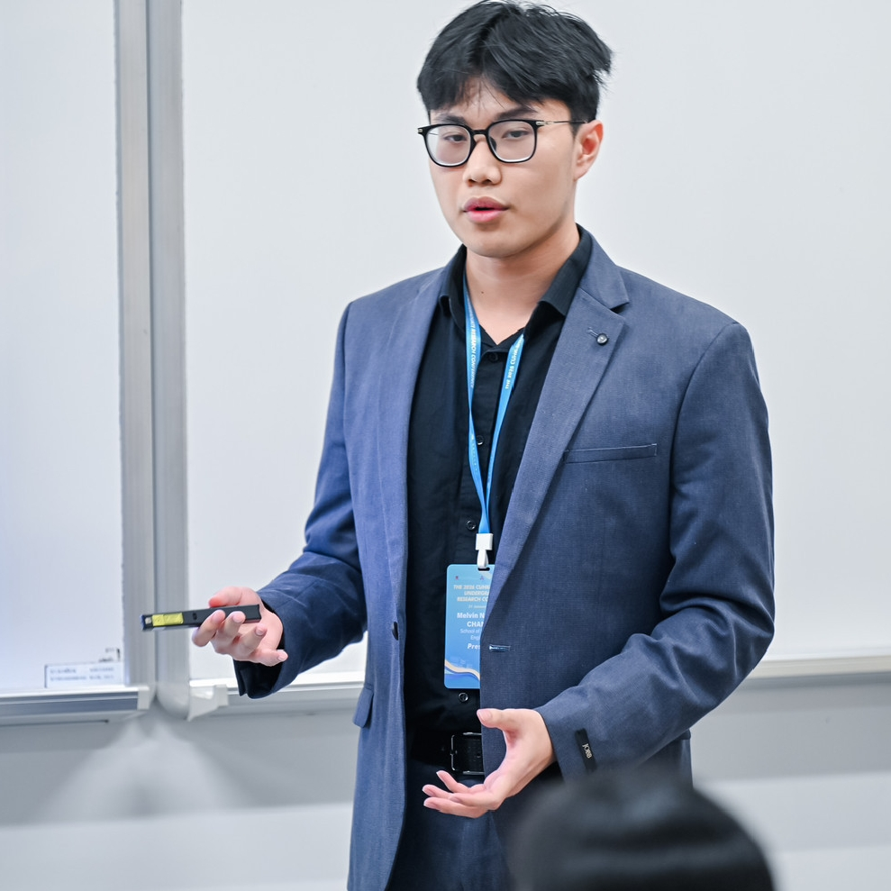

sh - Melvin@portfolio: ~ (80x24)
Melvin@portfolio:~$ whoami
Sophomore Electrical Engineering Student. Learning Enthusiast.

education.txt
academic.record
B.Eng in Electrical and Computer Engineering
Chinese University of Hong Kong, Shenzhen | 2024 - presentskills.json
> competencies
Python
C++
R
Git
LaTeX
CSS
JavaScript
Linux
interests.md
# personal.interests
When I'm not studying, I enjoy:
- Exploring nature, taking walks and jogging.
- Learning new languages.
- Connecting and talking with new people.
- Playing strategy games.
experience.md
Experiences
IT Board Member @ InvestSync
Oct 2025 - Present- Designed and Developed events registration and attendance webapp.
- Worked with Tailwind CSS, Next.js, and Firebase for projects.
- Collaborated with other developers and designers utilzing git.
Student Assistant @ Harmonia College
Oct 2024 - Present- Managed and Hosted college events.
- Handled administrative tasks and coordinated with college faculty.
- Designed promotional materials and Photographed for activities.
IT Committee Member @ PPITSZ
Nov 2024 - Apr 2025- Developed and maintained the organization's website.
- Utilized Tailwind CSS, Next.js, and Vercel for deployment.
- Coded a QR code based identification system for a large-scale event.
~/projects/index
project.portfolio
InvestSync Event Helper
An event registration and attendance management webapp. Utilizes account management and authentication through google account. Implemented QR-based check-in system.
TypeScript Next.js Firebase Tailwind CSS
Source
PPIT-SZ Website
A modern, responsive website for the PPIT-SZ organization.
TypeScript Next.js Vercel Tailwind CSS
Details
Spes Pew Pew
A short shooter minigame built for a school exhibition built in Godot.
Godot GdScript
Source